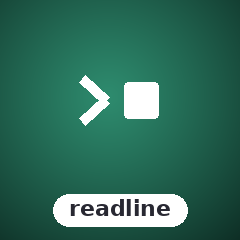

Interactive prompts — text, confirm, select, multi-select, textarea
Text, Confirm, Selection, MultiSelect, and Textarea prompts with full keyboard handling, filter-as-you-type, and pagination. State-machine model — no external readline dependency.
composer require sugarcraft/sugar-readlineuse SugarCraft\Readline\{TextPrompt, SelectionPrompt, MultiSelectPrompt};
// Text prompt
$name = TextPrompt::new('Your name:')->HandleChar('A')->Confirm()->Value();
// Selection prompt
$lang = SelectionPrompt::new('Pick a language:', ['PHP', 'Go', 'Rust', 'Python'])
->HandleKey('enter');
// Multi-select with constraints
$tools = MultiSelectPrompt::new('Pick tools:', ['vim', 'git', 'docker', 'php'])
->WithMinSelections(1)
->WithMaxSelections(3)
->HandleKey('space')
->HandleKey('enter');